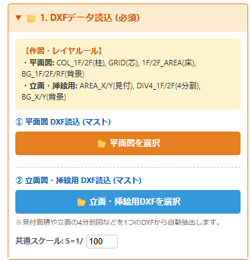
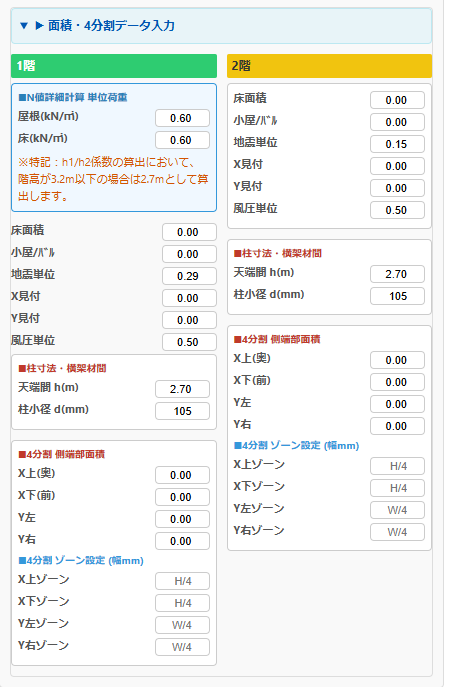
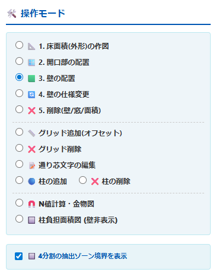
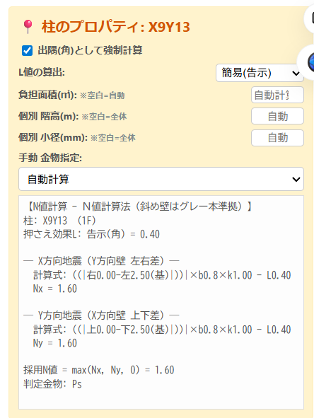
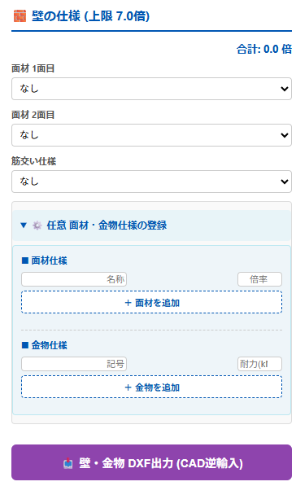
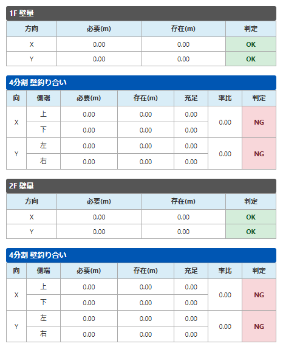
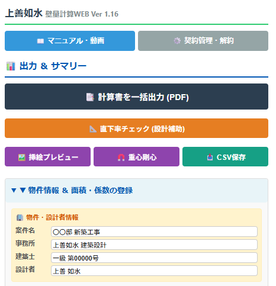

【年間150件以上の構造審査を通す実務者が開発】 設計者の皆様が「最短」で「正確」な計算書を作成するためのノウハウが凝縮されています。
🔄 いつでも簡単に解約可能です（ご契約と解約について）
本ツールは、必要な時に必要な期間だけ安心してご利用いただけるよう、非常にシンプルで分かりやすい解約システムを採用しています。
引き止めや複雑な手続きは一切ありません。 設定画面の「解約ボタン」を1クリックするだけで即座に解約手続きが完了します。解約手続きを行った後も、現在ご契約いただいている期間の最終日時までは、引き続きすべての機能（計算書のPDF出力など）をご利用いただけます。
単発のプロジェクトでのご利用など、1ヶ月だけ使ってすぐに解約する、といった使い方も大歓迎です。
本マニュアルは、本WEBプログラムの各機能と具体的な操作手順を詳細に解説するものです。
⚠️ ご利用前の重要同意事項（免責事項）
本プログラムを起動すると、初回に「免責事項および利用条件」の同意モーダルが表示されます。
本ツールは法適合性を確認する補助ツールです。画面上の計算は無償ですが、計算書を出力（確認申請にそのまま出しても使えるPDF形式等）する際は有償となります。
出力結果を用いた申請等に関するすべての責任は利用者（設計者ご自身）に帰属します。
操作や結果に対する個別サポートは行っておりません（ユーザー専用BBSをご利用ください）。
これらの条件を確認し、「同意する」にチェックを入れて利用を開始してください。
🚫 1アカウントの複数人利用（同時ログイン）の禁止
本ツールはセキュリティ保護およびデータ破損防止のため、同じアカウントで複数の端末（またはブラウザ）から同時に利用することはできません。
第1章：事前準備と基本設定
1-1. お使いのCADでのDXFデータ作成
VIDEO
本ツールは、DXF出力可能なすべてのCADに対応しています。以下のレイヤ設定で平面図を作成し、DXF保存してください。
通り芯: GLID レイヤ（※GRID も認めています）柱: COL_1F, COL_2F レイヤ（※通り芯の交点に「点」か「〇」を配置）背景下図: BG_1F, BG_2F, BG_RF レイヤ（※部屋の間取り、外周線の壁位置、窓などを自由に下絵として描いてください）
【実践編】ARCHITREND ZERO からの連携と見付面積の作図フロー
アーキトレンドで作図した立面図をJw_cad（JW）へ書き出し、見付面積を作図してDXF保存するまでの一連の流れを動画で解説しています。
① 立面図からJW・DXFへの書き出し
VIDEO
1-2. データの読み込みとレイヤマネージャー
VIDEO
作成したDXFファイルを、画面右側の「DXF読込」パネルの指定場所からアップロードします。

【図】画面右側のDXFデータ読込パネル
画面右上の「DXFレイヤ表示設定」パネルで、下絵として不要なレイヤのチェックを外すと画面がスッキリと整理されます。
1-3. 画面左側パネル：基本設定と数値の入力
VIDEO
画面左側のパネルには、建物の基本情報や面積を入力する項目が並んでいます。

【図】画面左側の重量割増係数・見付面積などの入力欄
重量割増係数などの入力: 公益財団法人 日本住宅・木材技術センターが配布している表計算ツールで算出した、2025年改正法に基づく係数をここに入力します。🔗 日本住宅・木材技術センター 配布ページへ ※上記リンク先より「壁量等の基準（令和7年施行）に対応した表計算ツール（多機能版）」 をダウンロードしてご利用ください。
⚠️ 見付面積の手入力（超重要） 「見付面積（X方向・Y方向）」は、設計者ご自身で立面図等から算出し、必ず左側パネルに【手入力】 してください。ここの入力を忘れると、風圧力に対する必要壁量が正しく計算されず、重大な計算ミスにつながります。
第2章：各入力ツールの詳細と使い方
画面右側のツールバーからモードを切り替えて操作します。入力内容はすべて、リアルタイムで左側パネルの計算結果に連動します。

【図】画面右側に並ぶ入力ツール群
🔧 床面積入力ツール
VIDEO
何ができるか: 1階・2階・屋根の床面積（水平投影面積）を定義します。使い方: DXFの通り芯の交点（柱が配置されていなくてもスナップします）をクリックし、面積ポリゴンを作成します。【⚠️ 審査担当者への配慮について】 必ず「三角形」「長方形」「台形」などの基本形状に分割して登録 してください。作成された面積の数値は左側パネルの面積項目に自動で転記（反映）されます。
🔧 グリッド（通り芯）編集ツール
VIDEO
何ができるか: DXFから読み込んだ通り芯に対して、新しい線の「追加」や、不要な線の「削除」ができます。使い方: 任意の座標を指定して線を引くか、既存の線を選択して削除します。利用シーン: CADデータ側で通り芯を引き忘れた場合などの微調整を行いたい時に、CADに戻らずにブラウザ上で完結させることができます。
🔧 柱入力・編集ツール
VIDEO
何ができるか: 柱の追加・削除、および金物の設定を行います。

【図】柱を選択した際に表示される金物・属性設定パネル
使い方: 通り芯の交点をクリックして柱を配置します。配置された柱をクリックすると、システム上で選択中の柱がハイライトされ、使用する「柱頭・柱脚金物」をリストから選択できます。
【⚠️ 隅柱の必須設定】 「隅柱（出隅）である」 という個別設定を行ってください。これを忘れるとN値の引抜力計算が法規通りに行われません。
🔧 開口部（窓・ドア）入力ツール
VIDEO
何ができるか: 通り芯上に「開口部（壁がない場所）」を設定します。使い方: 柱と柱の間をクリックして開口部として指定します。利用シーン: ここに開口部を設定しておくことで、後から誤ってその場所に「耐力壁」を配置してしまうミスを防ぎます（ロック機能）。下絵のDXFを見ながら、先に窓の位置をなぞっておくのがコツです。
🔧 耐力壁入力ツール（メイン機能）と任意仕様の登録
VIDEO
建物の強さを決定する、本ツールの最も重要な機能です。
【基本的な使い方】

【図】右下パネル：壁の仕様リストと任意面材登録
✨ 「告示以外」の任意面材・任意金物の登録（超重要機能）
本ツールは、あらかじめ用意された告示仕様の壁だけでなく、メーカー独自の大臣認定耐力壁やオリジナル金物を自由に登録して使用することができます。
① 任意面材（壁）の登録手順 「任意面材追加」 ボタンをクリックします。※注意：任意面材（大臣認定耐力壁等）を使用した場合、確認申請時にはその認定書の写しを必ず本ツールの計算書に添付して提出してください。
② 任意金物の登録手順 「任意金物追加」 を選択します。
【⚠️ 大臣認定耐力壁の 1P 割付について】 必ず 1P の間隔で柱を配置し、その柱の間に耐力壁を配置 してください。半端な寸法で配置すると認定外となります。
【💡 耐力壁の配置アドバイス（Tips）】 まずは外壁ぐるりにその指定面材を配置し、画面上の「重心（G）」と「剛心（K）」の位置を確認する ことをお勧めします。
💡 【Tips】厄介な「斜め壁」も自動計算で一発処理！
実務で非常に手間のかかる「斜め壁」の水平成分の算出も、本ツールなら直感的な操作で完結します。柱間をクリックするだけで、システムが角度を自動計算し、cosθ・sinθのべき乗を用いた有効壁倍率を瞬時にX・Y方向へ按分します。
VIDEO
📝 耐力壁入力に関する徹底Q&A
Q1. デフォルトのリストにない「告示以外」の壁を追加するには？
A. 上記の【任意面材の登録手順】に従い、名称と倍率を入力して追加してください。追加した仕様はリストから何度でも選択可能です。
Q2. 大臣認定壁の倍率が「2.54」のように小数点第2位までありますが、入力できますか？
A. はい、可能です。任意面材追加のポップアップにて正確に数値を入力してください。計算システムは入力された数値をそのまま使用して壁量を算出します。
Q3. 壁を置こうとしても、エラーになったり配置できません。
A. 本ツールは「柱と柱の間」にのみ壁を配置できる仕様です。壁が置けない箇所には、柱が配置されていない（またはグリッドが存在しない）状態です。柱入力ツールで柱を配置してから壁を置いてください。
Q4. 斜め壁はどのように配置すればよいですか？
A. 平面図上で斜めに配置された柱と柱の間をクリックするだけで、システムが自動的に斜め壁として認識し配置されます。
Q5. 斜め壁の壁倍率（水平成分）はどのように計算されますか？
A. システムが配置された壁の角度を自動で計算し、設定された壁倍率に「cosθ」「sinθ」のべき乗（2乗等） を乗じて、X方向・Y方向それぞれの有効な壁倍率（水平成分）として自動計算・按分します。
Q6. 一度配置した壁の仕様を、後から別の仕様に一括で変更できますか？
A. 変更したい新しい仕様をリストから選択した状態で、キャンバス上の既に配置されている壁をクリックすると、その壁の仕様が上書きされます。
Q7. 間違えて配置してしまった壁を消すにはどうすればよいですか？
A. ツールバーから「削除ツール」を選択し、消したい壁をクリックしてください。
Q8. 窓（開口部）を設定した場所に壁を配置しようとするとどうなりますか？
A. 誤配置を防ぐため、システムが配置をブロックし、開口部の上には耐力壁を置けない仕様になっています。
Q9. 大臣認定の「1P指定」を忘れて、半端な幅で配置してしまったらどうなりますか？
A. 確認申請時に審査機関から「認定外」として指摘・否決されます。認定条件の幅（1Pなど）は設計者の責任で必ず守って配置してください。
Q10. 剛心を寄せるための配置のコツはありますか？
A. 重心（G）に対して剛心（K）が離れている場合、剛心を寄せたい方向（重心から見て剛心と反対側）の外周部付近に、壁倍率の高い耐力壁を集中して配置すると、効率よく剛心が移動し偏心率が改善します。
第3章：検定結果の確認と出力
3-1. リアルタイム・オールクリアの確認
耐力壁の配置を進めると、画面左側のパネルで以下の計算が常時行われます。

【図】リアルタイムで連動・判定される計算結果パネル
壁量計算 （必要壁量と存在壁量の比較）四分割計算 （端部の壁量バランス、斜め壁の自動振り分け含む）※充足率が「1.0」を超えた場合、側端部分の壁量割合は建築基準法上「確認不要」となるため、割合（率）は「ー」と表示され、判定は無条件で「OK」となります。 N値計算 （精算法による各柱の引抜力と金物判定）
すべての項目が「OK（クリア）」になるように、壁の仕様や配置、柱の金物を調整してください。
3-2. 計算書出力（有償）とデータ保存
VIDEO

【図】画面上部に配置された出力・保存ボタン群
第4章：設計者向けQ&A（DXF・その他トラブルシューティング）
Q1. DXFを読み込んだのに、柱や通り芯が表示されません。
A. レイヤ名 GLID に加え GRID も認識しますが、それ以外で表示されない場合、以下の原因が考えられます。
Q2. 「見付面積」を入力しても壁量計算の判定が変わりません。
A. 壁量計算は、地震力と風圧力で計算された必要壁量のうち、「大きい方の数値」 が採用されます。※大臣認定耐力壁を使用した場合、認定書をこの計算書に添付して申請してください。
第5章：【解説動画】法改正と壁量計算の基本
以下の動画は、マニュアル内からいつでもご視聴いただけます。
2025年法改正の概要と壁量計算 必要壁量の算出 4分割法とは Ｎ値計算とは 柱の小径等、2025年の法改正で新たに追加された基準です
【更新情報・不具合報告について】
本プログラムは原則ノーサポートですが、更新案内やバグ修正の進捗は X（旧Twitter） にて随時お知らせしています。note をご確認ください。
Xのアカウントは @Jozen_Josui_DX mdo3